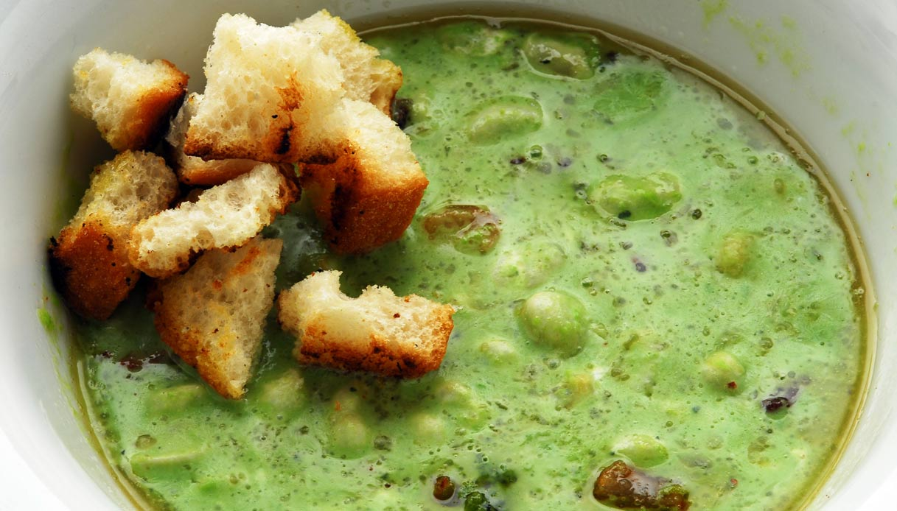
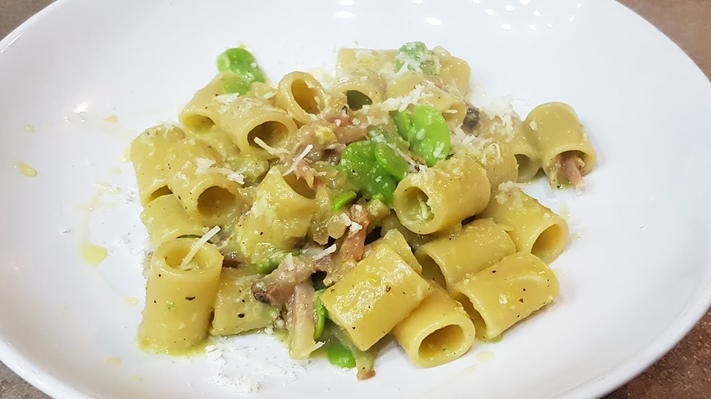

Cosa sono le fave?
Le fave sono legumi antichissimi, tipici della dieta mediterranea. Possono essere consumate fresche o secche e sono spesso utilizzate in zuppe, puree o abbinate a verdure e formaggi. Ricche di proteine e ferro, sono un'ottima alternativa alla carne nelle diete vegetariane.
Con il loro verde intenso e il sapore pieno, le fave raccontano di primavere contadine e di piatti semplici ma ricchi di sostanza. Antiche come il tempo, crescono generose nei campi assolati, nutrite da terra e sole. Fresche, croccanti, oppure essiccate e rassicuranti, sanno donare corpo e calore ai piatti, legandosi con armonia a erbe, formaggi e memorie di cucina familiare. In ogni baccello, un piccolo gesto d’amore della natura.
Valori nutrizionali delle fave (per 100g cotte)
Le fave forniscono energia e sono consigliate per il buon funzionamento dell’intestino e il controllo del colesterolo.

ZUPPA DI FAVE E CICORIA
Ingredienti
- 300g di fave secche
- 200g di cicoria
- 1 cipolla
- Olio extravergine d'oliva
- Sale e pepe
Preparazione
Mettete a bagno le fave per una notte. Rosolate la cipolla con l’olio, aggiungete le fave e la cicoria, coprite con acqua e cuocete a fuoco lento per circa 2 ore. Regolate di sale e pepe e servite calda.

PASTA FAVE, GUANCIALE E PECORINO
Ingredienti
- 200g di pasta (tipo rigatoni o mezze maniche)
- 150g di fave fresche o surgelate
- 100g di guanciale a cubetti
- 50g di pecorino grattugiato
- Olio extravergine d'oliva
- Sale e pepe nero
Preparazione
Cuoci la pasta in abbondante acqua salata. Nel frattempo, fai rosolare il guanciale in padella con un filo d’olio finché diventa croccante. Aggiungi le fave e cuoci per qualche minuto. Scola la pasta al dente, uniscila al guanciale e fave, aggiungi il pecorino e mescola bene. Servi subito con pepe nero a piacere.